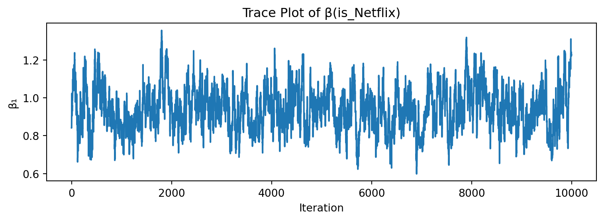
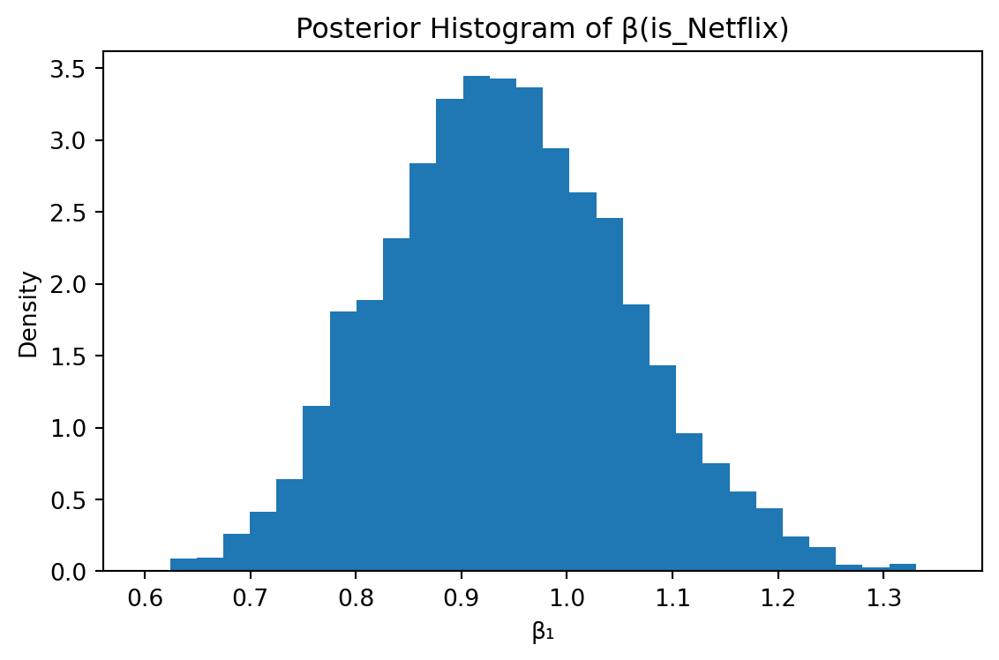

is_Netflix is_Prime has_Ads price choice resp task
0 True False True 28 1 1 1
1 False False True 16 0 1 1
2 False True True 16 0 1 1
3 True False True 32 0 1 2
4 False True True 16 1 1 2Multinomial Logit Model
This assignment expores two methods for estimating the MNL model: (1) via Maximum Likelihood, and (2) via a Bayesian approach using a Metropolis-Hastings MCMC algorithm.
1. Likelihood for the Multi-nomial Logit (MNL) Model
Suppose we have \(i=1,\ldots,n\) consumers who each select exactly one product \(j\) from a set of \(J\) products. The outcome variable is the identity of the product chosen \(y_i \in \{1, \ldots, J\}\) or equivalently a vector of \(J-1\) zeros and \(1\) one, where the \(1\) indicates the selected product. For example, if the third product was chosen out of 3 products, then either \(y=3\) or \(y=(0,0,1)\) depending on how we want to represent it. Suppose also that we have a vector of data on each product \(x_j\) (eg, brand, price, etc.).
We model the consumer’s decision as the selection of the product that provides the most utility, and we’ll specify the utility function as a linear function of the product characteristics:
\[ U_{ij} = x_j'\beta + \epsilon_{ij} \]
where \(\epsilon_{ij}\) is an i.i.d. extreme value error term.
The choice of the i.i.d. extreme value error term leads to a closed-form expression for the probability that consumer \(i\) chooses product \(j\):
\[ \mathbb{P}_i(j) = \frac{e^{x_j'\beta}}{\sum_{k=1}^Je^{x_k'\beta}} \]
For example, if there are 3 products, the probability that consumer \(i\) chooses product 3 is:
\[ \mathbb{P}_i(3) = \frac{e^{x_3'\beta}}{e^{x_1'\beta} + e^{x_2'\beta} + e^{x_3'\beta}} \]
A clever way to write the individual likelihood function for consumer \(i\) is the product of the \(J\) probabilities, each raised to the power of an indicator variable (\(\delta_{ij}\)) that indicates the chosen product:
\[ L_i(\beta) = \prod_{j=1}^J \mathbb{P}_i(j)^{\delta_{ij}} = \mathbb{P}_i(1)^{\delta_{i1}} \times \ldots \times \mathbb{P}_i(J)^{\delta_{iJ}}\]
Notice that if the consumer selected product \(j=3\), then \(\delta_{i3}=1\) while \(\delta_{i1}=\delta_{i2}=0\) and the likelihood is:
\[ L_i(\beta) = \mathbb{P}_i(1)^0 \times \mathbb{P}_i(2)^0 \times \mathbb{P}_i(3)^1 = \mathbb{P}_i(3) = \frac{e^{x_3'\beta}}{\sum_{k=1}^3e^{x_k'\beta}} \]
The joint likelihood (across all consumers) is the product of the \(n\) individual likelihoods:
\[ L_n(\beta) = \prod_{i=1}^n L_i(\beta) = \prod_{i=1}^n \prod_{j=1}^J \mathbb{P}_i(j)^{\delta_{ij}} \]
And the joint log-likelihood function is:
\[ \ell_n(\beta) = \sum_{i=1}^n \sum_{j=1}^J \delta_{ij} \log(\mathbb{P}_i(j)) \]
2. Simulate Conjoint Data
We will simulate data from a conjoint experiment about video content streaming services. We elect to simulate 100 respondents, each completing 10 choice tasks, where they choose from three alternatives per task. For simplicity, there is not a “no choice” option; each simulated respondent must select one of the 3 alternatives.
Each alternative is a hypothetical streaming offer consistent of three attributes: (1) brand is either Netflix, Amazon Prime, or Hulu; (2) ads can either be part of the experience, or it can be ad-free, and (3) price per month ranges from $4 to $32 in increments of $4.
The part-worths (ie, preference weights or beta parameters) for the attribute levels will be 1.0 for Netflix, 0.5 for Amazon Prime (with 0 for Hulu as the reference brand); -0.8 for included adverstisements (0 for ad-free); and -0.1*price so that utility to consumer \(i\) for hypothethical streaming service \(j\) is
\[ u_{ij} = (1 \times Netflix_j) + (0.5 \times Prime_j) + (-0.8*Ads_j) - 0.1\times Price_j + \varepsilon_{ij} \]
where the variables are binary indicators and \(\varepsilon\) is Type 1 Extreme Value (ie, Gumble) distributed.
3. Preparing the Data for Estimation
The “hard part” of the MNL likelihood function is organizing the data, as we need to keep track of 3 dimensions (consumer \(i\), covariate \(k\), and product \(j\)) instead of the typical 2 dimensions for cross-sectional regression models (consumer \(i\) and covariate \(k\)). The fact that each task for each respondent has the same number of alternatives (3) helps. In addition, we need to convert the categorical variables for brand and ads into binary variables.
4. Estimation via Maximum Likelihood
from scipy.optimize import minimize
from scipy.special import logsumexp
# List of covariate column names
covariates = ['is_Netflix', 'is_Prime', 'has_Ads', 'price']
# 1) Force conversion of covariates to numeric and build design matrix
X_numeric = X[covariates].apply(pd.to_numeric, errors='raise')
X_mat = X_numeric.to_numpy(dtype=float)
# 2) Convert choice indicator to numeric array
y = pd.to_numeric(X['choice'], errors='raise').to_numpy(dtype=float)
# 3) Create group identifiers for each (resp, task) pair
groups = (
X
.groupby(['resp', 'task'])
.ngroup()
.astype(int)
.to_numpy()
)
n_groups = groups.max() + 1
K = len(covariates)
# Define negative log-likelihood for the MNL model
def negative_log_likelihood(beta):
xb = X_mat.dot(beta) # linear predictor
logden = np.zeros_like(xb)
for g in range(n_groups):
mask = (groups == g)
logden[mask] = logsumexp(xb[mask])
log_prob = xb - logden
return - (y * log_prob).sum()
# Initial parameter guess
beta_initial = np.zeros(K)
# Optimize to find MLE
result = minimize(
negative_log_likelihood,
beta_initial,
method='BFGS',
options={'disp': True}
)
beta_hat = result.x
cov_beta = result.hess_inv # approximate covariance matrix
se_beta = np.sqrt(np.diag(cov_beta))
# Compute 95% confidence intervals
z = 1.96
ci_lower = beta_hat - z * se_beta
ci_upper = beta_hat + z * se_beta
print("Parameter estimates (MLE), Standard Errors, 95% CI")
for name, est, se, lo, up in zip(covariates, beta_hat, se_beta, ci_lower, ci_upper):
print(f"{name:>12s}: {est:8.4f} {se:8.4f} ({lo:8.4f}, {up:8.4f})")Optimization terminated successfully.
Current function value: 879.855368
Iterations: 12
Function evaluations: 85
Gradient evaluations: 17
Parameter estimates (MLE), Standard Errors, 95% CI
is_Netflix: 0.9412 0.1146 ( 0.7166, 1.1658)
is_Prime: 0.5016 0.1207 ( 0.2650, 0.7383)
has_Ads: -0.7320 0.0886 ( -0.9057, -0.5583)
price: -0.0995 0.0064 ( -0.1119, -0.0870)5. Estimation via Bayesian Methods
# === 1) Metropolis–Hastings MCMC ===
from scipy.stats import norm
def log_prior(beta):
lp = norm.logpdf(beta[0], 0, np.sqrt(5))
lp += norm.logpdf(beta[1], 0, np.sqrt(5))
lp += norm.logpdf(beta[2], 0, np.sqrt(5))
lp += norm.logpdf(beta[3], 0, 1.0)
return lp
def log_posterior(beta):
return -negative_log_likelihood(beta) + log_prior(beta)
n_iter = 11_000
burn_in = 1_000
proposal_sd = np.array([0.05, 0.05, 0.05, 0.005])
chain = np.zeros((n_iter, 4))
beta_curr = beta_initial.copy()
lp_curr = log_posterior(beta_curr)
n_accept = 0
for t in range(n_iter):
beta_prop = beta_curr + np.random.normal(0, proposal_sd)
lp_prop = log_posterior(beta_prop)
if np.log(np.random.rand()) < (lp_prop - lp_curr):
beta_curr = beta_prop
lp_curr = lp_prop
n_accept += 1
chain[t] = beta_curr
print(f"Acceptance rate: {n_accept/n_iter:.3f}")
samples = chain[burn_in:]Acceptance rate: 0.573hint: Use N(0,5) priors for the betas on the binary variables, and a N(0,1) prior for the price beta.
_hint: instead of calculating post=lik*prior, you can work in the log-space and calculate log-post = log-lik + log-prior (this should enable you to re-use your log-likelihood function from the MLE section just above)_
hint: King Markov (in the video) use a candidate distribution of a coin flip to decide whether to move left or right among his islands. Unlike King Markov, we have 4 dimensions (because we have 4 betas) and our dimensions are continuous. So, use a multivariate normal distribution to pospose the next location for the algorithm to move to. I recommend a MNV(mu, Sigma) where mu=c(0,0,0,0) and sigma has diagonal values c(0.05, 0.05, 0.05, 0.005) and zeros on the off-diagonal. Since this MVN has no covariances, you can sample each dimension independently (so 4 univariate normals instead of 1 multivariate normal), where the first 3 univariate normals are N(0,0.05) and the last one if N(0,0.005).


Parameter MLE Mean MLE SE MLE 95% CI Post Mean Post SD Post 95% CI
is_Netflix 0.941195 0.114606 (0.717, 1.166) 0.941829 0.114358 (0.730, 1.178)
is_Prime 0.501616 0.120735 (0.265, 0.738) 0.506039 0.112458 (0.298, 0.740)
has_Ads -0.731994 0.088639 (-0.906, -0.558) -0.729377 0.085914 (-0.889, -0.559)
price -0.099480 0.006357 (-0.112, -0.087) -0.099861 0.006330 (-0.112, -0.088)6. Discussion
- Interpretation of Parameter Estimates
Agreement between MLE and Bayesian estimates. The point estimates, intervals, and uncertainty from the Maximum Likelihood and Metropolis–Hastings posterior summaries are virtually identical. This indicates that with a reasonably large simulated dataset, the likelihood dominates our relatively diffuse priors, and our MCMC sampler has converged well.
Meaning of βₙₑₜfₗᵢₓ > βₚᵣᵢₘₑ. We found β Netflix ≈ 0.94 and β Prime ≈ 0.50. Holding ads and price constant, this implies a higher utility (and thus higher choice probability) for Netflix than for Amazon Prime. In other words, respondents prefer Netflix over Prime, all else equal.
Negative price coefficient. β price ≈ –0.10 means that for each additional dollar in monthly price, utility declines by about 0.10 units. This negative sign is exactly the expected economic effect: higher price reduces consumer willingness to subscribe.
- Extending to a Hierarchical (Random‐Parameters) MNL Model Data simulation changes
To extend the simple MNL to a hierarchical (random‐parameters) framework, it is assumed that individual respondents exhibit heterogeneous tastes. Rather than a single fixed coefficient vector, each respondent i is assigned a personal βᵢ drawn from a population distribution N(μ, Σ). In simulation, a population mean μ and covariance Σ are first specified; for each respondent, βᵢ ∼ N(μ, Σ) is sampled. Utility then takes the form Uᵢⱼ = Xⱼ′βᵢ + εᵢⱼ, with εᵢⱼ following the extreme‐value distribution, and choices are generated according to the multinomial logit rule.
Estimation proceeds by hierarchical Bayes: in each MCMC iteration, the full set of individual coefficients {βᵢ} is updated conditional on that respondent’s observed choices and the current hyperparameters (μ, Σ). Subsequently, μ and Σ are updated from their conditional posterior given all βᵢ draws. This alternating sampling captures both within‐respondent likelihood contributions and between‐respondent preference dispersion. Hyperpriors such as μ ∼ N(0, τ²I) and Σ ∼ Inv‐Wishart(…) complete the specification.
Implementation requires restructuring the coefficient object from a single vector to an array of dimension (number of respondents × number of covariates). The posterior density comprises two blocks: one block of respondent‐specific terms, each involving that respondent’s choice likelihood and the prior N(μ, Σ), and one block for μ and Σ with their hyperpriors. By fitting this model, both average part‐worths and the variation and covariance of preferences across respondents are recovered.